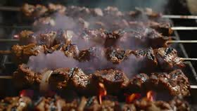
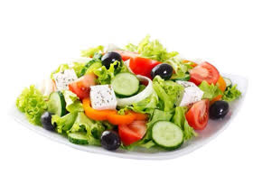
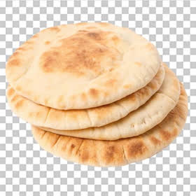

Döner Teller 17,50 €
Mit Pommes oder Reis, Tomatensauce, Fladenbrot, Zaziki und gemischtem Salat.
Familie Aslan · seit 1999 in Lindhorst
„Komm als Gast, geh als Freund.“
Seit über 25 Jahren stehen wir für Familie Aslan am Grill: frisches Fleisch, hausgemachte Saucen und Gerichte nach Rezepten, die bei uns niemand abkürzt. Ob schnell zwischendurch oder gemütlich im Restaurant mit Freunden — bei uns ist jeder Gast willkommen.
Handwerk, kein Fließband

Ofenwarm, außen knusprig, innen weich — die Basis für Rollo, Dürüm und Lahmacun.

Kalb, Geflügel oder Lamm — täglich frisch zubereitet, nicht aus der Tiefkühltruhe.

Krautsalat, Tomaten, Gurken, Peperoni — frisch geschnitten, nicht vorgeschnippelt aus der Tüte.

Zaziki, Knoblauch- oder scharfe Sauce — nach Rezept der Familie Aslan.
Bei uns in Lindhorst
Bis zu 50 Sitzplätze im Innenraum, bei gutem Wetter 25 weitere im Biergarten. Wer's eilig hat: alle Gerichte gibt's auch zum Mitnehmen — ruf uns einfach kurz an.
Bitte beachten: Wir bieten aktuell keinen Lieferdienst an.
Anfahrt & Kontakt →| Montag – Samstag | 11:30 – 21:30 Uhr |
| Sonntag | 12:00 – 21:30 Uhr |
| Dienstag | Ruhetag |
Bahnhofstraße 35
31698 Lindhorst
Tel. 05725 / 88 85